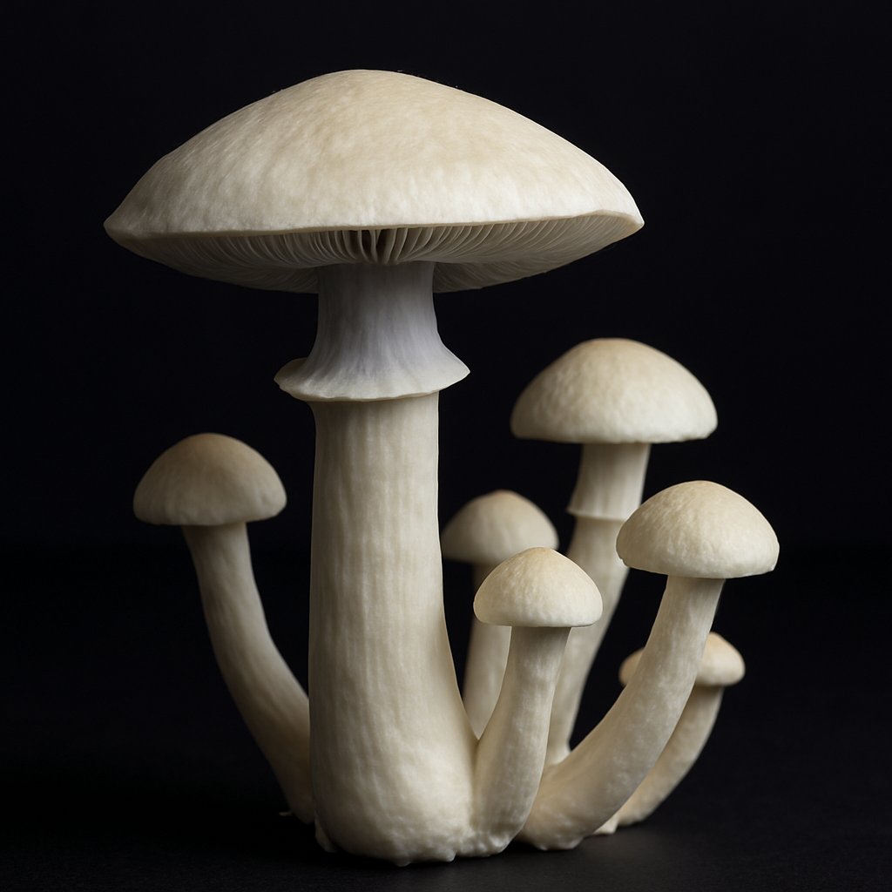
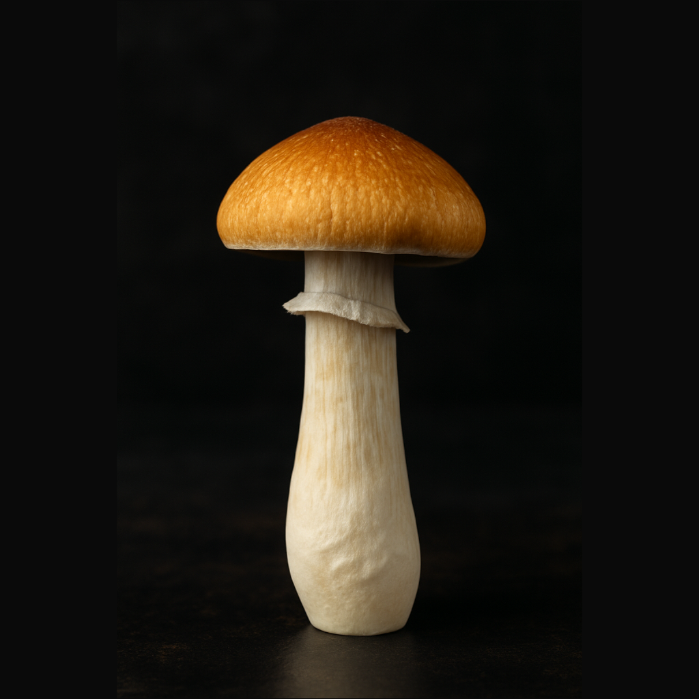
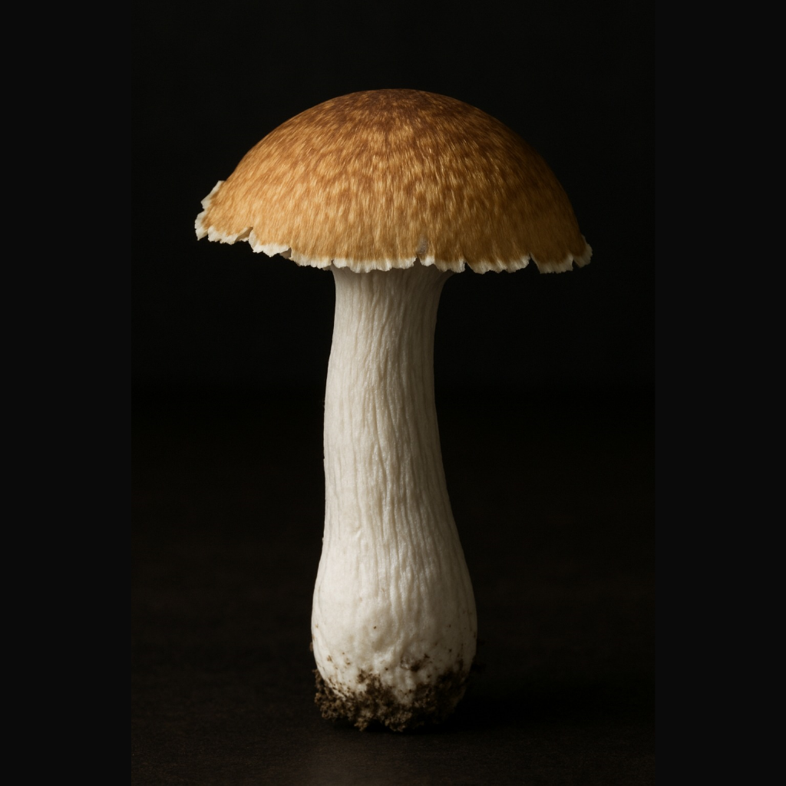
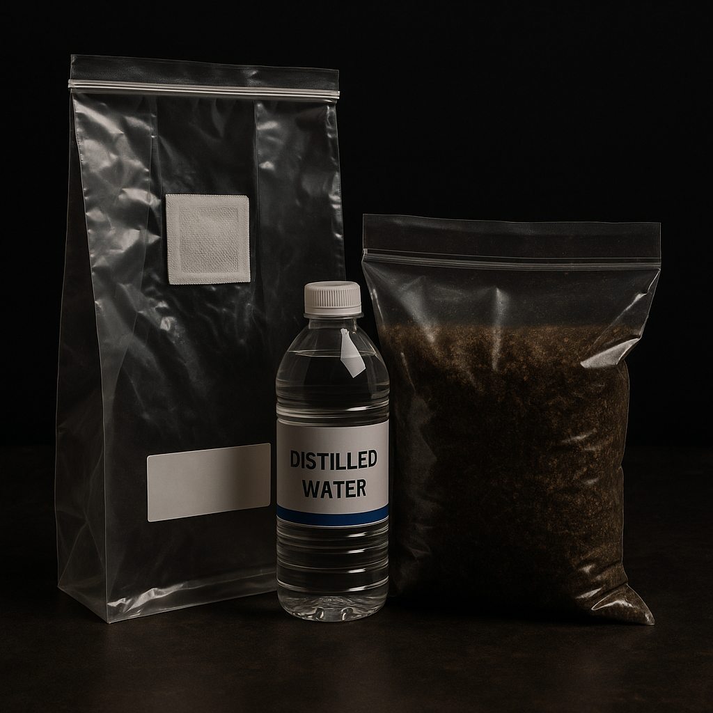

| Efectos: | Potencia: | ||||
|---|---|---|---|---|---|
| •Visual: |  | ||||
| •Auditivo: | Dosis: | • Micro: 0.15 gramos | |||
| •Corporal: | • Baja: 0.3 - 1 gramos | ||||
| •Euforia: | • Media: 1.1 - 2 gramos | ||||
| • Macro: 2.1 - 3 gramos | |||||
| Bluemoon | |||||
|
Potente y de acción rápida, produce más psilocibina que cepas como Golden Teacher o Stargazer. Sus efectos son intensamente visuales, auditivos y alteran la percepción del tiempo. No se recomienda su consumo para principiantes. |
|||||
Los hongos que ofrecemos contienen psilocibina, un compuesto que altera
el
estado de conciencia y la percepción de la realidad según la dosis.
Conoce la diferencia entre microdosis y macrodosis.
Nuestras Setas
| Efectos: | Potencia: | ||||
|---|---|---|---|---|---|
| •Visual: |  | ||||
| •Auditivo: | Dosis: | • Micro: 0.25 gramos | |||
| •Corporal: | • Baja: 0.5 - 1 gramos | ||||
| •Euforia: | • Media: 1.1 - 2.5 gramos | ||||
| • Macro: 3 - 4 gramos | |||||
| Goldenteacher | |||||
|
Su nombre se debe al color dorado. Ha sido utilizado en rituales y ceremonias ancestrales por su conexión con la naturaleza. Sus efectos son más cortos que el promedio, con una sensación corporal notable, parte visual tranquila y euforia. Mantiene un equilibrio entre lo mental y lo visual sin ser abrumador. |
|||||
| Efectos: | Potencia: | ||||
|---|---|---|---|---|---|
| •Visual: |  | ||||
| •Auditivo: | Dosis: | • Micro: 0.25 gramos | |||
| •Corporal: | • Baja: 0.5 - 1 gramos | ||||
| •Euforia: | • Media: 1.1 - 2.5 gramos | ||||
| • Macro: 3 - 4 gramos | |||||
| Stargazer | |||||
|
Esta seta, originaria de la cordillera de los Andes y los alrededores de Machu Picchu, es una de las más antiguas aunque actualmente es rara. Se caracteriza por su alta producción y potencia, ya que con poca dosis genera efectos notorios en el ánimo, la percepción y el pensamiento. |
|||||
¿Te interesa Cultivar?
Los kits de cultivo son pequeñas cajas con lo necesario para cultivar tus propios hongos en casa de manera sencilla para que desde la comodidad de tu hogar obtengas hongos y los veas crecer. Con este kit puedes sacar de 3 a 4 cosechas.
-
Instrucciones de uso:
- Lavar y desinfectar con alcohol el sitio donde se va a ubicar el kit y las manos a la hora de manipularlo.
- Aplicar agua destilada en las paredes de la bolsa fructificadora con el spray.
- Quitar la tapa al sustrato y verificar que esté totalmente colonizado y sin contaminación (tiene que verse blanco y sin ningun tipo de mancha azul o verde).
- Cerrar la bolsa hermética y colocar en un lugar limpio y sin que le de luz del sol directa.
- Aplicar agua en las paredes de la bolsa fructificadora cada siete horas.
- Luego de 15 días tendrás hongos listos.
- Para retirarlos desinfecta tus manos y el sitio donde se cosecha.
- Retira todas las setas incluyendo primordios, raspa la superficie del sustrato, aplica agua con el spray unas 60 o 70 veces, tapa el sustrato y lo metes al refrigerador por 24 horas.
- Vuelves a repetir el proceso; y en 15 días vuelves a cosechar.

Kits de cultivo